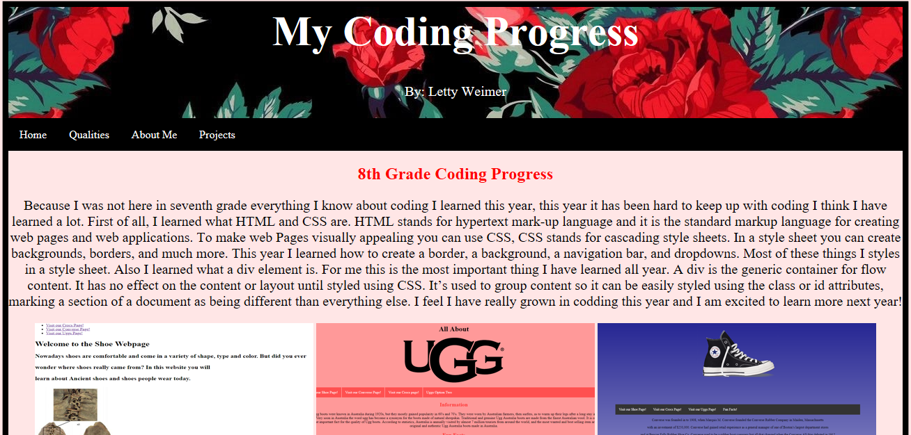
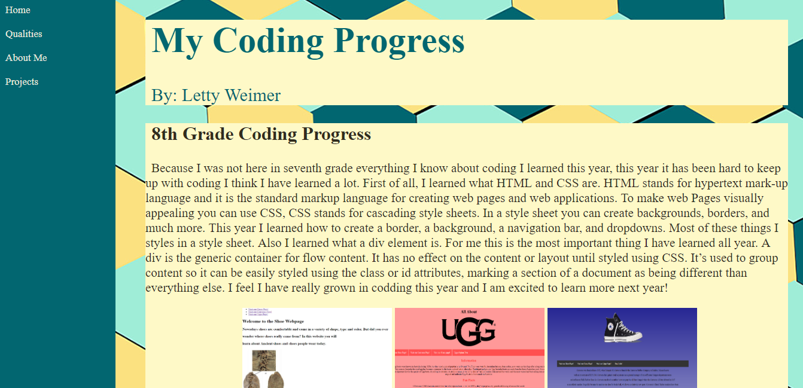
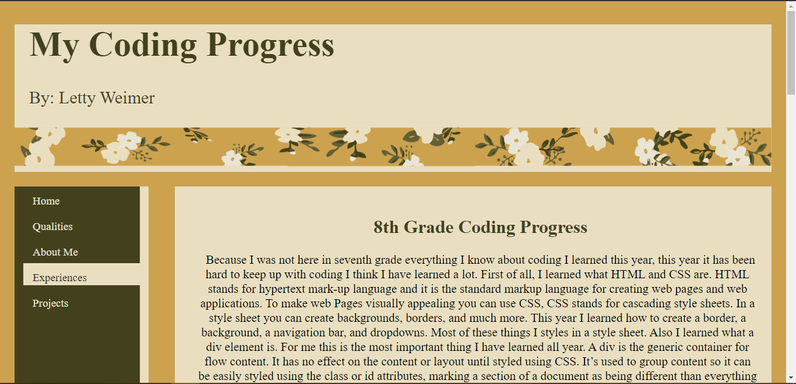

My Coding Progress, 8th-10th Grade
8th Grade Coding Progress
Because I was not here in seventh grade everything I know about coding I learned this year, this year it has been hard to keep up with coding I think I have learned a lot. First of all, I learned what HTML and CSS are. HTML stands for hypertext mark-up language and it is the standard markup language for creating web pages and web applications. To make web Pages visually appealing you can use CSS, CSS stands for cascading style sheets. In a style sheet you can create backgrounds, borders, and much more. This year I learned how to create a border, a background, a navigation bar, and dropdowns. Most of these things I styles in a style sheet. Also I learned what a div element is. For me this is the most important thing I have learned all year. A div is the generic container for flow content. It has no effect on the content or layout until styled using CSS. It’s used to group content so it can be easily styled using the class or id attributes, marking a section of a document as being different than everything else. I feel I have really grown in codding this year and I am excited to learn more next year!
In the pictures above you can see I learned a few things I coding. I learned how to add pictures and videos. Also, I can now change the colors of elements. While all of these things have to do with CSS I also learned new things in HTML. I learned how to make ordered lists, unordered lists, headers, banners, and footers.
9th Grade Coding Progress
This year we did not have a class to learn coding in. that is why there is not drastic improvement on my more coding abilities. The image below on the right is my website from last year, I think this year my work looks more professional.
 10th Grade Coding Progress
This year there was not an official class for coding so my portfolio is similar to last year's. I really liked my coding from 9th grade so I hardly changed my website's look. I only changed the color scheme.
